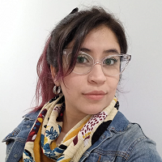

Ximena Leiva- MN XXXXX MP XXXXXX

- Psicologa UBA - especializada en terapia infanto-juvenil
- Posgrado en curso en Fundación Foro
- Terapeuta cognitivo-conductual
Breve descripción: Me considero una amante de los gatos, aspasionada por la psicologia y carismatica. Practico voley 2 veces por semana y en mis tiempos libres me gusta ver una buena peli con pochoclos.